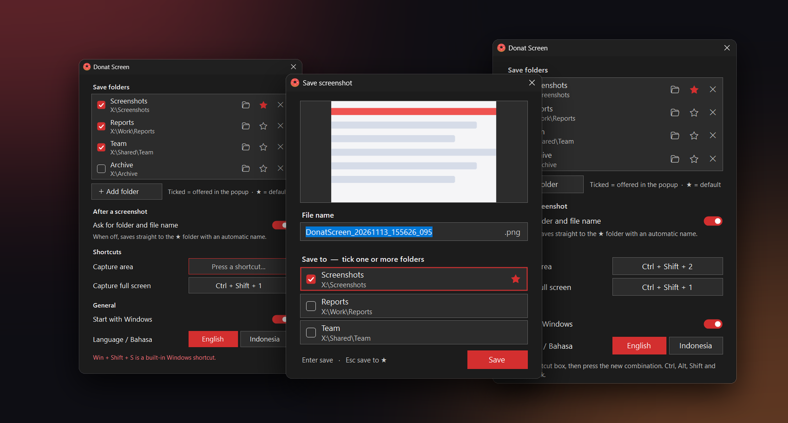
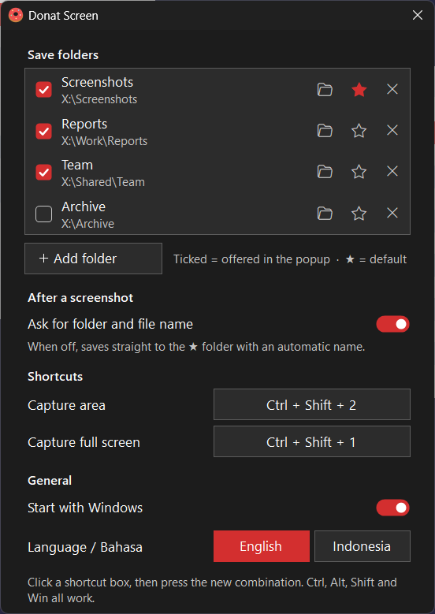
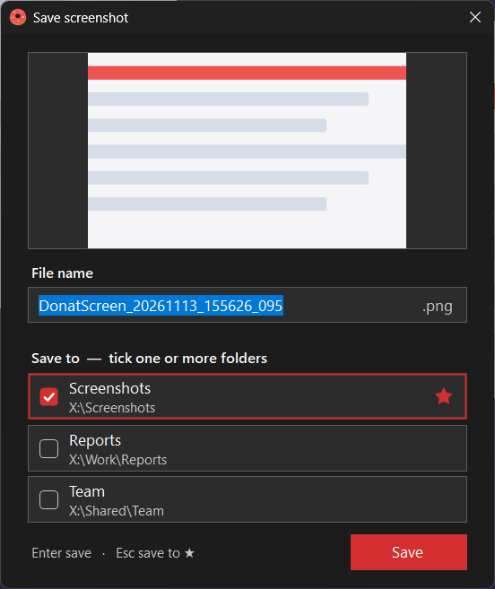
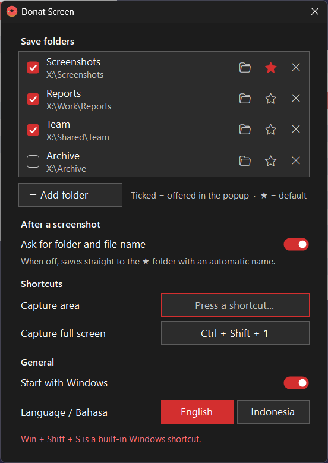
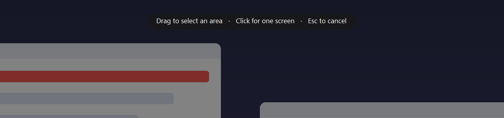

Settings
Your folders, your shortcuts
Keep a list of save folders, star the default, choose which ones the popup offers, and record new shortcuts — clashes are refused with a clear reason.
A tiny Windows screenshot tool with fully customizable save folders. Press a hotkey, pick an area — it is on your clipboard at once. In a hurry? Press Esc to save to your default folder.
Version 1.1.0 · Windows 10 / 11 · Free & open source (MIT)

Everything a daily screenshot tool needs — and nothing that gets in the way.
Ctrl+Shift+2 for an area, Ctrl+Shift+1 for every monitor. Both can be changed, Win combinations too.
The screen freezes and dims; drag to select with the size shown, click for a whole monitor. Menus and tooltips are captured.
Every shot is on the clipboard before anything else — as a bitmap for Office and chat, as PNG for browsers.
A quick popup with preview, file name and your folders to tick. Or skip it and save straight to the ★ folder.
Existing names get a number. Shortcuts Windows or other apps already use are refused when you record them.
One exe, settings in an ini next to it, works from a USB stick. Light/dark theme, English or Bahasa Indonesia.
Clean, native Windows windows that follow your light or dark theme.
Keep a list of save folders, star the default, choose which ones the popup offers, and record new shortcuts — clashes are refused with a clear reason.


A preview, a file name to edit and the folders to tick — one or several. Enter saves; Esc saves to the default folder with an automatic name.
While you record a shortcut, Windows' own combinations, keys held by other apps and risky single-modifier combos are refused.


The whole desktop freezes the moment you press the hotkey, so menus and tooltips stay put. Works across monitors with different scaling.
Windows 10 / 11 · .NET Framework 4.8 is already part of Windows. Not code-signed yet: if SmartScreen appears, choose More info → Run anyway.
Get DonatScreen.exe and put it in any folder — or on a USB stick.
Settings opens: pick your save folders and shortcuts. The app then waits in the tray.
Press Ctrl+Shift+2 and drag over an area. Paste it anywhere, or choose where to save it.
No. Donat Screen is a single ~100 KB exe; the .NET Framework it uses is built into Windows 10 and 11. Settings are kept in DonatScreen.ini next to the exe.
Never — no updates, no telemetry. Screenshots only go to the clipboard and the folders you choose.
Exclusive full-screen DirectX games can come out black, because the capture uses the regular Windows desktop.
Yes: turn on Start with Windows. It starts quietly in the tray, no admin rights needed.